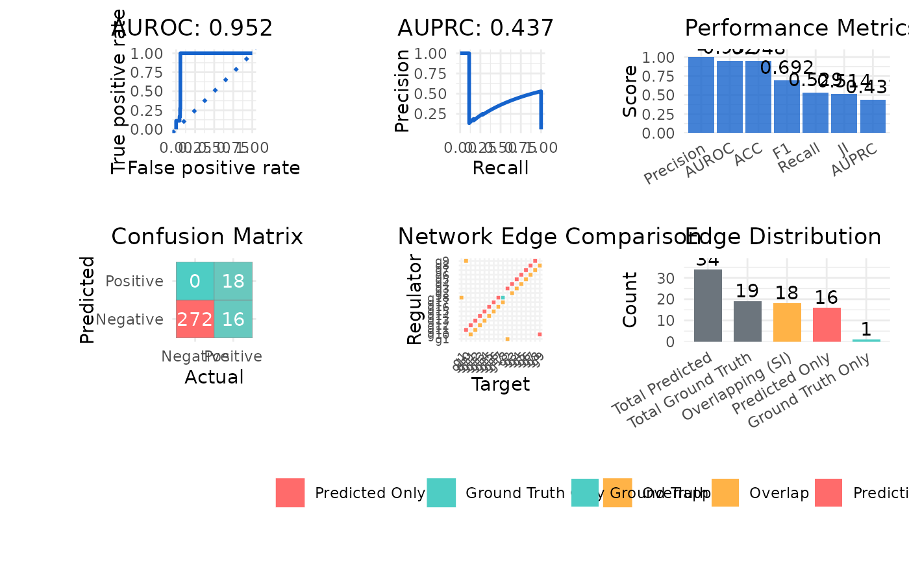

Calculate Network Prediction Performance Metrics
Source:R/network_evaluation.R
calculate_metrics.RdCalculates comprehensive performance metrics for evaluating predicted network structures, including classification performance, precision-recall metrics, and network topology metrics.
Usage
calculate_metrics(
network_table,
ground_truth,
metric_type = c("all", "auc", "auroc", "auprc", "precision", "recall", "f1",
"accuracy", "si", "ji"),
return_plot = FALSE,
line_color = "#1563cc",
line_width = 1
)Arguments
- network_table
A data frame of predicted network structure containing:
regulator- Source nodes of the network edgestarget- Target nodes of the network edgesweight- Edge weights representing prediction confidence
- ground_truth
A data frame of ground truth network with the same format as
network_table.- metric_type
The type of metric to return, default is
all. This can take any of the following choices:all- Returns all available metrics with Performance Metrics plotauc- Returns both AUROC and AUPRC with their plotsauroc- Area Under ROC Curve with plotauprc- Area Under Precision-Recall Curve with plotprecision- Proportion of correct predictions among positive predictionsrecall- Proportion of actual positives correctly identifiedf1- Harmonic mean of precision and recallaccuracy- Overall classification accuracysi- Set Intersection, counting correctly predicted edgesji- Jaccard Index, measuring overlap between predicted and true networks
- return_plot
Logical value, default is
FALSE, whether to generate visualization plots- line_color
Color for plot lines, default is
#1563cc- line_width
Width for plot lines, default is
1
Value
A list containing:
metrics- A data frame with requested metricsplot- A plot object if return_plot = TRUE (optional)
Examples
data("example_matrix")
data("example_ground_truth")
network_table <- inferCSN(example_matrix)
#> ℹ [2025-05-07 09:38:33] Running for <dense matrix>.
#> ℹ [2025-05-07 09:38:33] Checking input parameters.
#> ℹ [2025-05-07 09:38:33] Using L0 sparse regression model.
#> ℹ [2025-05-07 09:38:33] Using 1 core
#> ✔ [2025-05-07 09:38:33] Run done.
calculate_metrics(
network_table,
example_ground_truth,
return_plot = TRUE
)
#> $metrics
#> Metric Value
#> 1 AUROC 0.952
#> 2 AUPRC 0.437
#> 3 Precision 0.529
#> 4 Recall 1.000
#> 5 F1 0.692
#> 6 ACC 0.948
#> 7 JI 0.514
#> 8 SI 18.000
#>
#> $plot

#>
calculate_metrics(
network_table,
example_ground_truth,
metric_type = "auroc"
)
#> $metrics
#> Metric Value
#> 1 AUROC 0.952
#>